Scan het. Klaar.
Je noodpakket, altijd compleet.
Scan de barcode van je water, batterijen of blikken en Noodpakket vult de rest in. De app houdt bij wat er nog ontbreekt, waarschuwt voordat iets verloopt en zet je noodplan klaar, ook op papier.
Gratis · geen account · geen reclame · werkt zonder internet
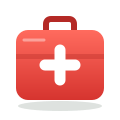
EHBO-doos1 st. / 1 st.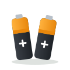
Batterijen1 pakken / 2 pakken23 d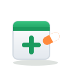
Medicijnen EHBO-doosZaklampBatterijen Noodradio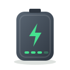
PowerbankContant geld Kopie ID-bewijs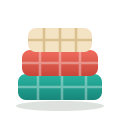
DekensKaarsen en lucifers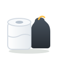
Wc-papier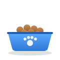
DierenvoerDe eerste 72 uur red je het zelf
Valt de stroom, het water of internet uit, dan heeft de hulp tijd nodig om op gang te komen. Noodpakket rekent precies uit wat jouw huishouden nodig heeft.
zelfredzaam thuis, het uitgangspunt van Denk vooruit
drinkwater per persoon per dag
contant per volwassene, €30 per kind
een seintje om je pakket na te lopen
Scan de barcode, de app vult de rest in
Noodpakket herkent het product, rekent de hoeveelheid uit en zet het bij het juiste item. Een DataMatrix-code met houdbaarheidsdatum? Die neemt hij ook mee.
- ScanRicht de camera op de barcode van water, batterijen, blikken of pleisters.
- Alles ingevuldNaam, foto, item en hoeveelheid: "6 × 1,5 liter" wordt 9 liter drinkwater.
- Datum erbijScan de houdbaarheidsdatum van de verpakking; de app onthoudt het product voor de volgende keer.
Alles voor de eerste drie dagen
Van checklist tot noodplan op papier. Privé, zonder account, en ook zonder internet.
Checklist op maat
Volgens Denk vooruit, voor jouw huishouden en het aantal dagen dat je kiest. Niet nodig? Verberg het item.
Barcode scannen
Product, hoeveelheid en foto worden opgezocht in Open Food Facts. Bekende producten herkent de app offline.
Nooit over datum
Een herinnering 30 en 7 dagen vooraf. Scan de datum gewoon van de verpakking.
Boodschappenlijst
Wat ontbreekt staat vanzelf op je lijst. Vink af en het gaat je pakket in. Deel de lijst met je huisgenoten.
Noodplan op papier
Verzamelpunt, contacten, medische info en calamiteitenzender. Print het als PDF voor bij je pakket.
Wat te doen bij…
Stroomuitval, NL-Alert, geen kraanwater of extreem weer: korte stappen die ook offline werken.
Rustig, overzichtelijk, in licht en donker
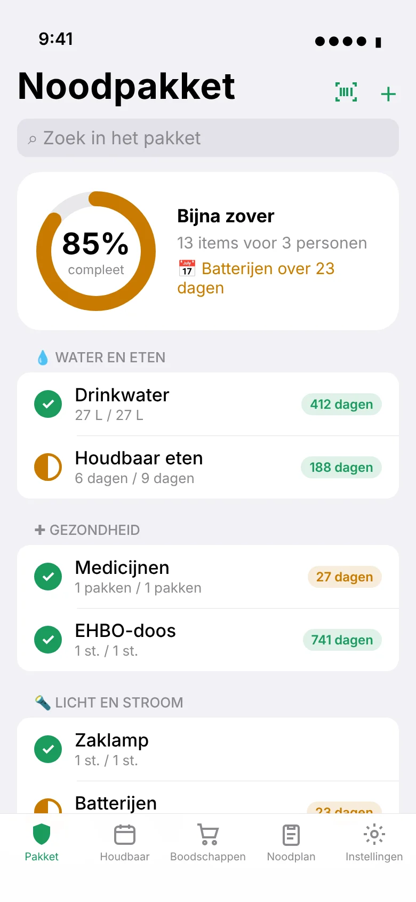
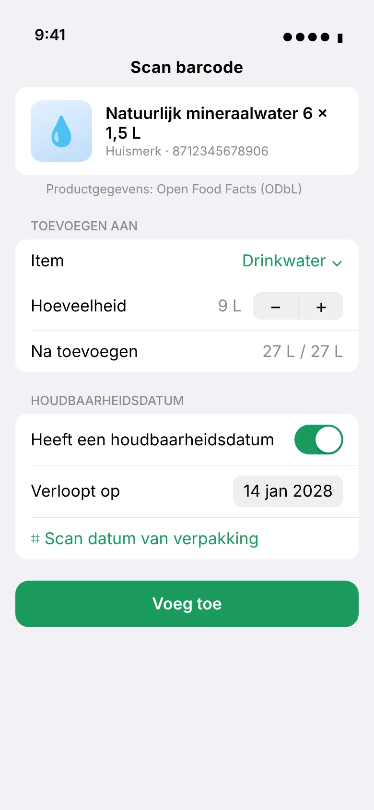
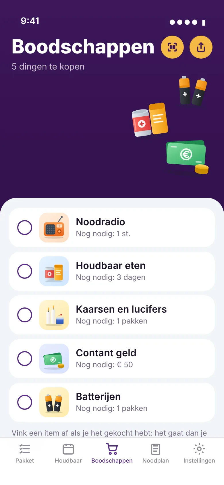
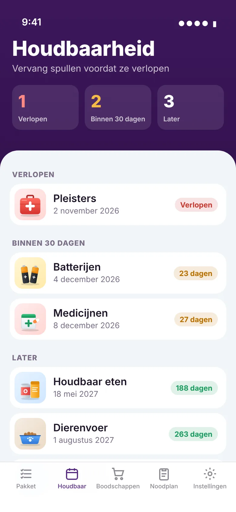
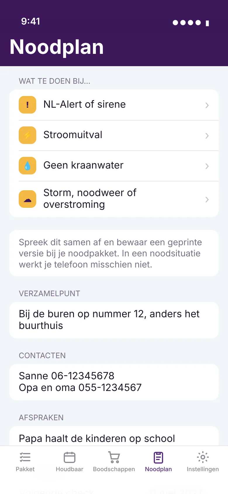
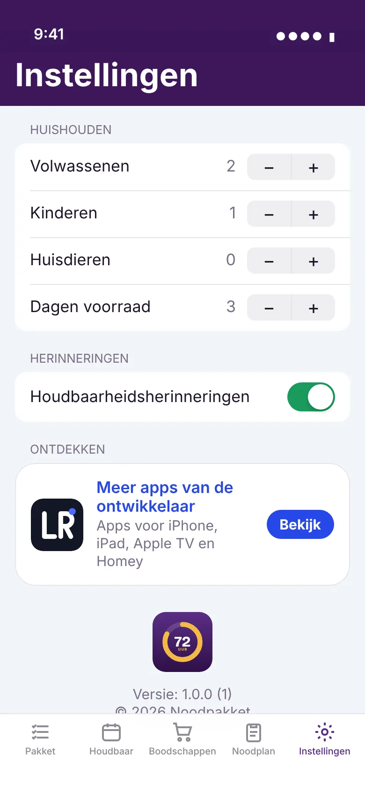
iPhone & iPad
Synchroniseert via je eigen iCloud, met widget op je beginscherm. Binnenkort in de App Store.
BinnenkortAndroid
Download de app rechtstreeks van deze site. Elke update is met dezelfde sleutel ondertekend en installeert over de vorige versie heen.
Download APK Zo installeer je hemVeelgestelde vragen
Wat kost Noodpakket?
Niets. De app is gratis, zonder advertenties of abonnement. Wil je de ontwikkeling steunen, dan kan dat met een vrijwillige donatie.
Welke gegevens gaan er naar internet?
Alleen de barcode van een product dat je scant, om het op te zoeken in Open Food Facts. Je pakket, je huishouden en je noodplan blijven op je eigen toestel.
Werkt het zonder internet?
Ja. Checklist, houdbaarheid, noodplan en de uitleg bij noodsituaties werken volledig offline. Producten die je al eens hebt gescand, herkent de app ook zonder internet.
Ik heb geen huisdieren. Moet ik dierenvoer dan negeren?
Nee, zet het op "Niet nodig". Dan telt het niet meer mee en staat het niet op je boodschappenlijst.
Is dit een app van de overheid?
Nee. Noodpakket is een onafhankelijke app die het advies van denkvooruit.nl volgt.
Klaar voor 72 uur?
Begin vandaag.
In een paar minuten weet je wat je hebt, wat je mist en wat binnenkort verloopt.